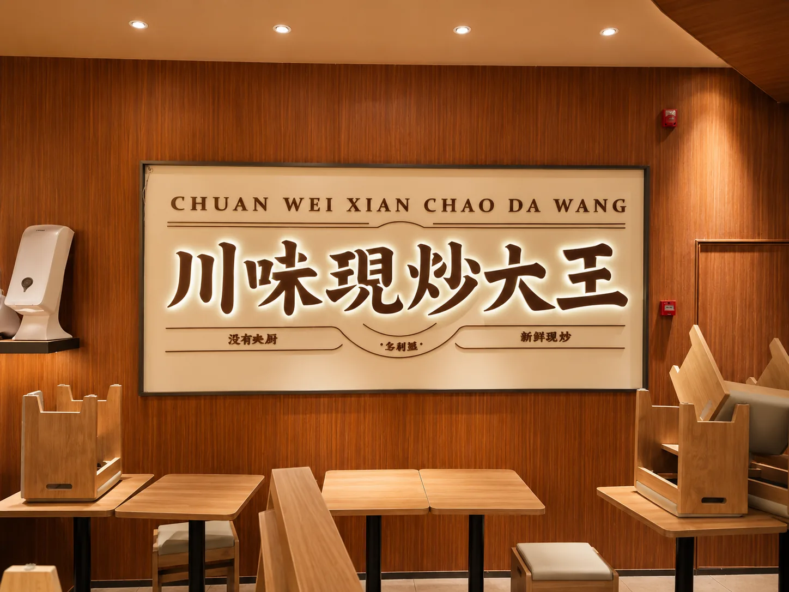
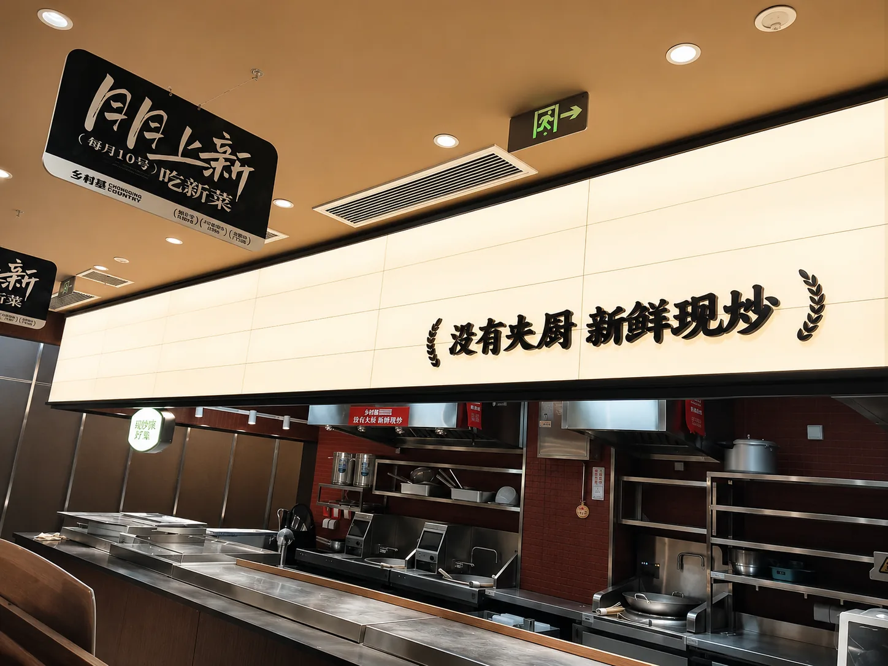
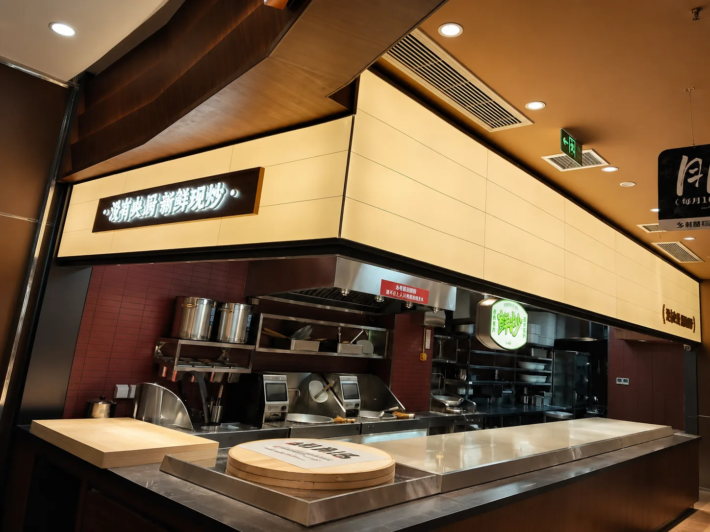
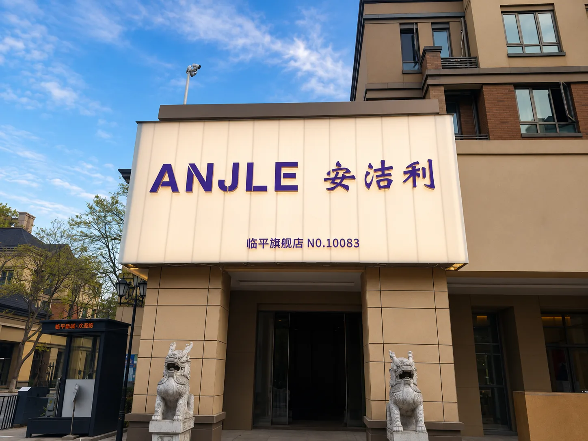
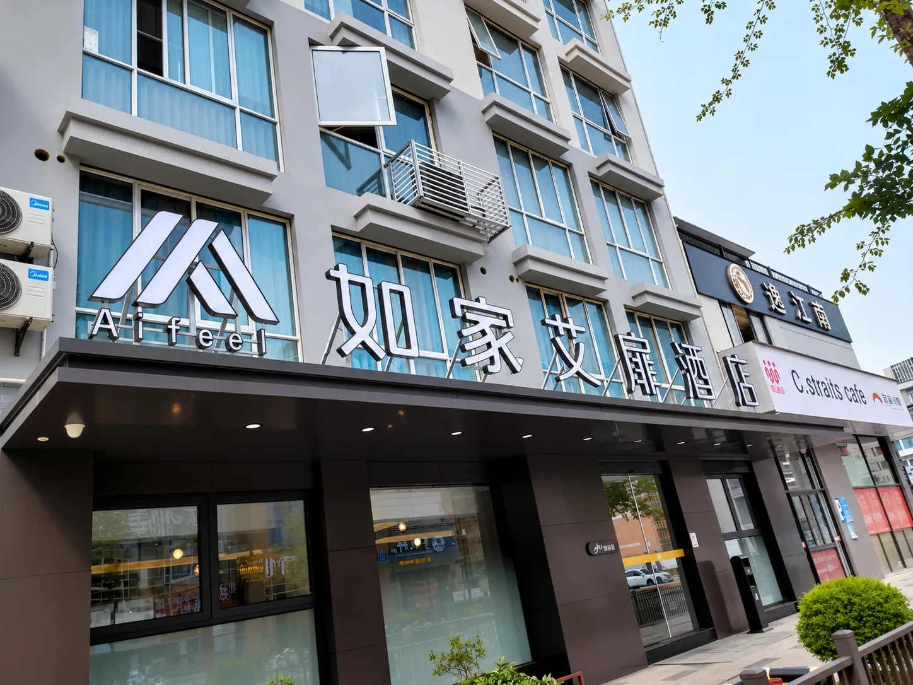

Case · Storefront Signage
商业门店招牌制作安装案例
案例涵盖餐饮与零售门店的室内外招牌、品牌字和门头画面，重点处理品牌识别、现场尺度、照明呈现和环境协调。
需求与设计方案
不同门店都需要在有限位置内清晰呈现品牌名和经营特征。设计根据门面比例、观看距离和环境明暗控制信息层级，避免文字过多或装饰抢占识别重点。
制作安装与检查
项目按现场尺寸推进制作与安装，完成后从正面、侧面、远距离和亮灯状态检查识别效果。公开资料未记录每个项目的具体材料型号，因此本页只描述可从实景确认的发光标识、门头饰面和墙面招牌表现。





展示图片基于项目实景资料进行网页展示优化；原始实景资料在内部保留。
项目结果
门店品牌信息在实际环境中获得更明确的识别位置，同时让设计表达与制作安装保持一致。该流程适用于餐饮、零售和社区商业门店。